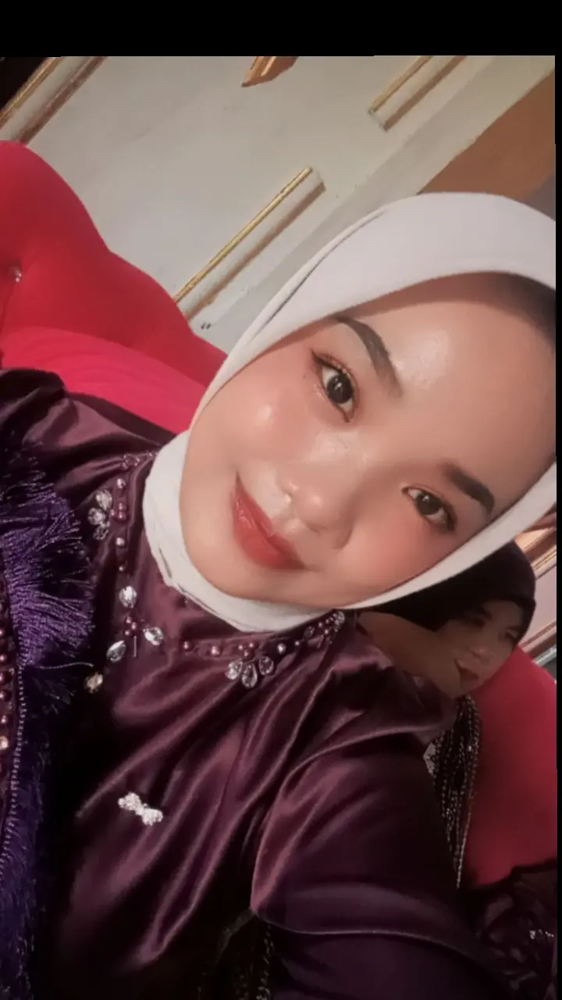

Selamat Datang di Website Saya
Website ini berisi tentang alur cerita dari Saya mahasiswa Semester 6 Angkatan 2023 dari Program Studi Pendidikan Matematika Universitas Muhammadiyah Kotabumi, yang berisi Foto, Video, dan Selang Waktu.
Tentang Saya
Perkenalkan, saya Lisa Oktafiani, mahasiswi Program Studi Pendidikan Matematika Universitas Muhammadiyah Kotabumi Angkatan 2023. Website ini saya buat sebagai tempat menyimpan kisah perjalanan selama menjalani kehidupan sebagai mahasiswa, mulai dari langkah pertama memasuki UMKO hingga berbagai pengalaman yang membentuk diri saya saat ini.
Perjalanan ini bukanlah perjalanan yang selalu mudah. Banyak perjuangan yang harus dilalui, mulai dari proses masuk Universitas Muhammadiyah Kotabumi, beradaptasi dengan dunia perkuliahan, menghadapi tugas, ujian, hingga berbagai tantangan yang mengajarkan arti kesabaran, kerja keras, dan pantang menyerah.
Di balik setiap kesulitan, selalu ada pelajaran berharga yang membuat saya terus berkembang menjadi pribadi yang lebih baik.Selama menempuh pendidikan, saya juga menemukan banyak kenangan indah bersama teman-teman seperjuangan. Tawa, kebersamaan, saling membantu saat mengerjakan tugas, hingga berbagai momen sederhana di kampus menjadi bagian dari cerita yang tidak akan terlupakan. Begitu pula dengan berbagai pengalaman pahit yang justru menjadi penguat untuk terus melangkah menuju masa depan.Saya memiliki cita-cita untuk menjadi Pegawai Negeri Sipil (PNS) sekaligus seorang pendidik yang mampu memberikan manfaat bagi banyak orang melalui dunia pendidikan. Semoga setiap langkah, doa, dan usaha yang dilakukan selama di bangku kuliah menjadi jalan menuju impian tersebut.Melalui website ini, saya ingin mengabadikan etiap cerita, perjuangan, dan kenangan selama menjadi mahasiswa di Universitas Muhammadiyah Kotabumi. Semoga suatu hari nanti, ketika membuka kembali halaman ini, semua perjalanan yang pernah dilalui dapat menjadi pengingat bahwa setiap mimpi besar selalu dimulai dari langkah-langkah kecil yang penuh perjuangan. Semoga kisah ini juga dapat menjadi inspirasi bagi siapa saja yang sedang berjuang meraih cita-citanya.Profile

Halo, saya Lisa Oktafiani, mahasiswi Program Studi Pendidikan Matematika Universitas Muhammadiyah Kotabumi Angkatan 2023. Website ini saya buat sebagai tempat untuk mengabadikan perjalanan hidup, kenangan, dan pengalaman yang telah membentuk diri saya hingga saat ini.Sebelum menjadi mahasiswa, saya memiliki banyak kenangan indah semasa bersekolah di SMK. Bersama sahabat-sahabat, saya belajar arti persahabatan, kebersamaan, saling mendukung, serta menghadapi berbagai suka dan duka. Momen-momen sederhana seperti belajar bersama, mengikuti kegiatan sekolah, hingga kelulusan menjadi kenangan yang akan selalu saya simpan dalam hati.Memasuki dunia perkuliahan di Universitas Muhammadiyah Kotabumi merupakan awal dari perjalanan baru yang penuh tantangan. Selama kuliah, saya belajar untuk menjadi pribadi yang lebih mandiri, bertanggung jawab, dan pantang menyerah dalam menghadapi berbagai tugas, ujian, maupun pengalaman kehidupan. Di balik setiap kesulitan, terdapat pelajaran berharga yang membuat saya terus berkembang.Melalui website ini, saya ingin menyimpan setiap cerita, foto, video, dan kenangan, baik dari masa sekolah, masa perkuliahan, maupun perjalanan menuju cita-cita. Semoga suatu hari nanti semua kenangan ini dapat menjadi pengingat bahwa setiap langkah kecil yang penuh perjuangan akan membawa kita pada masa depan yang lebih baik..
Galery
-
.jpeg)
Foto Angkatan Pendidikan Matematika Tahun 2023 -
.jpeg)
Foto KELUARGA -
.jpeg)
Foto kenangan Pmtk
Memori Video
-
Video selang waktu -
Video momen sewaktu belajar -
Video keseharian